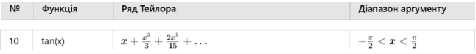

<app-my-header name="Лабораторна робота №5"></app-my-header>
<ion-content [fullscreen]="true">
  <ion-card>
    <ion-card-header>
      <h1>Завдання</h1>
      <p>
        Провести табулювання, обрахувати за допомогою циклу та рекурсії наступну
        функцію:
      </p>
      <!-- <div class="img_formula"></div> -->
      <!--  -->
      <!--  -->
      
    </ion-card-header>
    <ion-card-content>
      <ion-item>
        <ion-input
          label="Xn"
          labelPlacement="stacked"
          type="number"
          [(ngModel)]="xn"
          value="-1.56"
        >
        </ion-input>
      </ion-item>
      <ion-item>
        <ion-input
          label="Xk"
          labelPlacement="stacked"
          type="number"
          [(ngModel)]="xk"
          value="1.56"
        >
        </ion-input>
      </ion-item>
      <ion-item>
        <ion-input
          label="h"
          labelPlacement="stacked"
          type="number"
          [(ngModel)]="h"
          value="0.1"
        >
        </ion-input>
      </ion-item>
      <!-- <ion-button (click)="ras(#InputXn.value,#InputXk.value,#InputH.value)"
        >Розрахунок</ion-button
      > -->
      <ion-button (click)="ras()">Розрахунок</ion-button>
      <ion-card>
        <ion-card-title>
          <h1>Результати розрахунку</h1>
        </ion-card-title>
        <ion-card-content>
          <ion-list>
            <ion-item *ngFor="let item of xyInput; index as i">
              <ion-label>
                <h5>x: {{xx[i]}}</h5>
                <h5>y: {{item}}</h5>
              </ion-label>
            </ion-item>
          </ion-list>
        </ion-card-content>
      </ion-card>
    </ion-card-content>
  </ion-card>
  <canvas #lineCanvas></canvas>
</ion-content>
